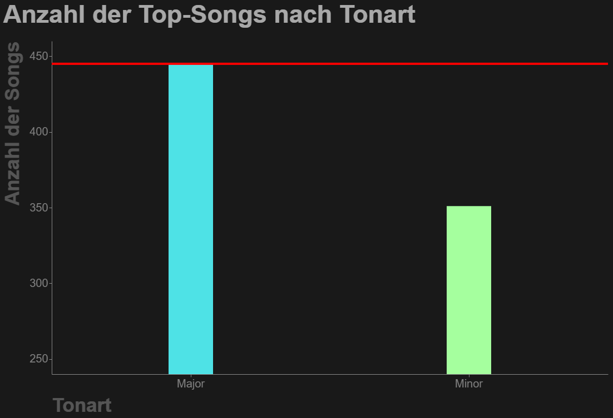
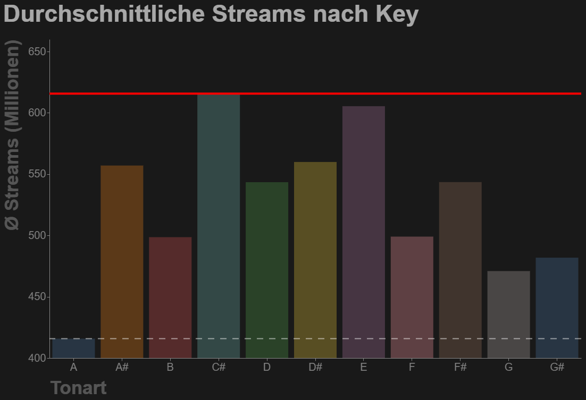
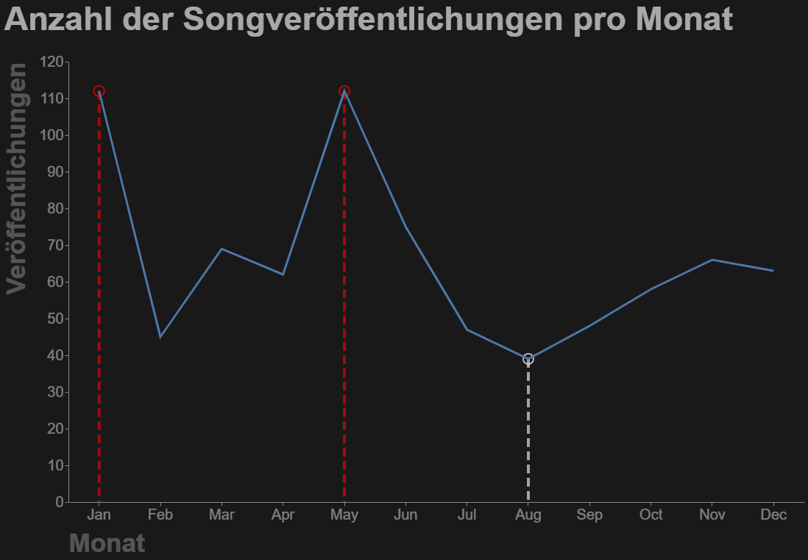
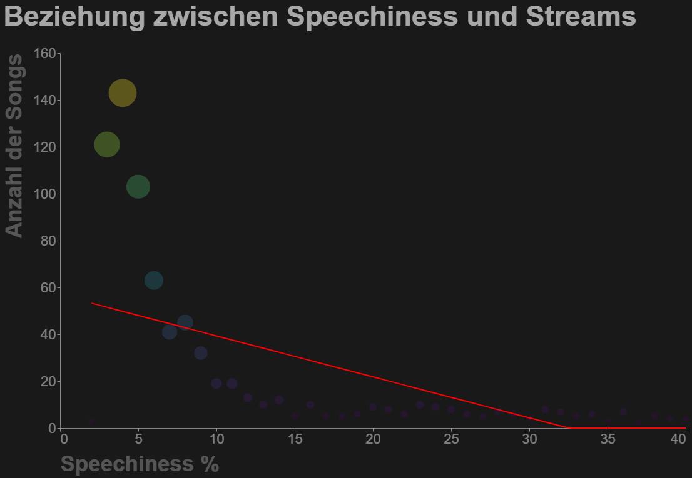
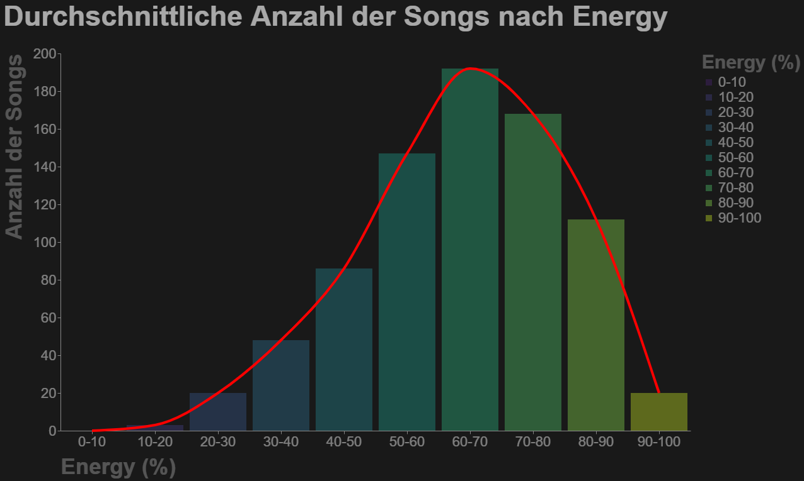
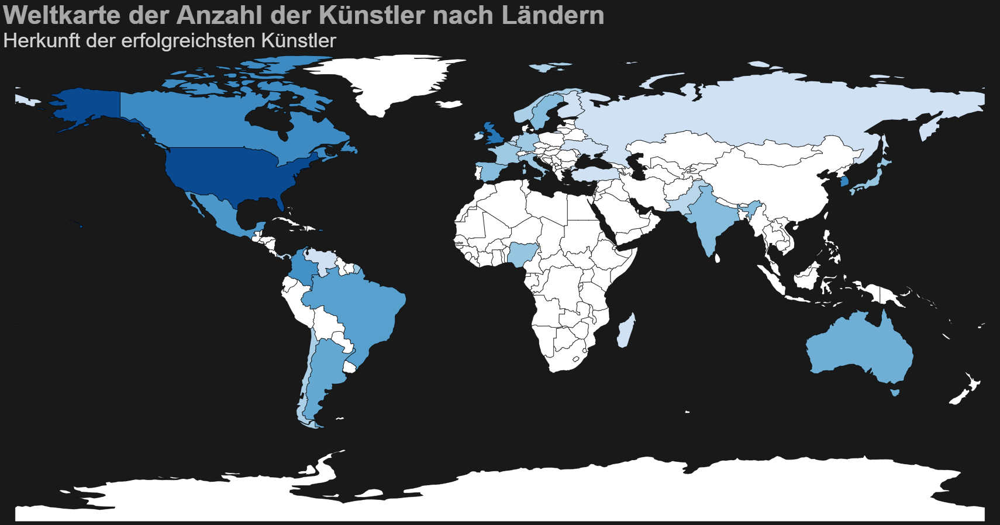

Mit den gewonnenen Erkenntnissen aus der Exploration können nun Visualisierungen erstellt werden. Ziel ist es, aus den gewonnen Erkenntnissen der Exploration visuell ansprechende und aussagekräftige Visualisierungen mit Altair zu erstellen.
6.1 Grundlegendes Design
Um ein durchgehendes Design zu ermöglichen, habe ich zuerst Konfigurationsparameter für Altair Plots erstellt. Diese sind so gut wie gleich in den verschiedenen Diagrammtypen:
.properties(): Allgemeine Eigenschaften des Diagramms.
title: Legt den Titel des Diagramms fest.
dy definiert die vertikale Verschiebung
background: Hintergrundfarbe des Diagramms.
width: Bestimmt die Breite des Diagramms in Pixeln.
height: Bestimmt die Höhe des Diagramms in Pixeln.
6.1.2 Titelkonfiguration
.configure_title(): Anpassungen für den Diagrammtitel.
fontSize: Die Schriftgröße des Titels in Pixeln.
anchor: Die Ausrichtung des Titels.
6.1.3 Achsenkonfiguration
.configure_axis(): onfiguration für beide Achsen (X & Y).
labelFontSize: Schriftgröße der Achsenbeschriftungen.
titleFontSize: Schriftgröße des Achsentitels.
titleColor und labelColor: Die Farbe des Achsentitels und der Beschriftungen.
titlePadding: Der Abstand zwischen dem Achsentitel und den Achsenbeschriftungen.
grid: Steuert die Anzeige des Netztes
6.1.4 Legendenkonfiguration
.configure_legend(): Passt das Aussehen der Legende an.
titleFontSize: Die Schriftgröße des Legendentitels.
labelFontSize: Die Schriftgröße der Legendenbeschriftungen.
6.1.5 Ansichtskonfiguration
.configure_view(): Konfiguation der Ansicht.
strokeWidth: Die Breite des Rahmens um das Diagramm.
6.1.6 Spezifische Achsenkonfigurationen
.configure_axisX() und .configure_axisY(): Spezifische Konfigurationen für die X- und Y-Achse.
labelAngle: Der Winkel der Achsenbeschriftungen auf der X-Achse. 0 bedeutet eine horizontale Ausrichtung.
titleAnchor: Die Ausrichtung des Achsentitels.
Beachte: Die Hintergrundfarbe, Schriftgröße und die width und height können in späteren Darstellungen in der quarto-Präsentation oder in dem Dashboard variieren.
6.2 Barplots
Für die Erstellung von Barplots sind meiner Meinung nach die Anzahl der Songs nach Tonart und Keys geeignet, da man mit einem Barplot perfekt Unterschiede in verschiedenen Kategorien aufzeigen kann.
Tonart:
Dafür habe ich zuerst einen Barplot mit den zwei verschiedenen Tonarten auf der X-Achse erstellt. Um den Unterschied besser aufzuzeigen, habe ich die Skalierung auf der Y-Achse geändert und eine Linie auf der Höhe des Maximalwerts platziert. Das ganze habe ich mit der ‘alt.layer()’ Funktion erreicht, die die Linie und den Plot layert.

Anzahl der Top-Songs nach Tonart
Keys:
Hierfür habe ich einen Barplot mit den verschiedenen Keys auf der X-Achse erstellt. Auch hier habe ich, um den Unterschied besser aufzuzeigen, die Skalierung auf der Y-Achse geändert. Außerdem habe ich wieder eine Linie durch den Maximalwert gezogen und eine gestrichelte Linie durch den Minimalwert. Um diese Linien und somit den Unterschied besser hervorzuheben, habe ich dem Barplot eine geringere opacity gegeben. Auch hier habe ich wieder mit ‘alt.layer()’ gearbeitet.

Anzahl der Ø Streams nach Key
6.3 Line-Chart
Ein Liniendiagramm ist ideal um die Anzahl der Song-Veröffentlichungen pro Monat darzustellen, da es die zeitliche Entwicklung und Trends klar hervorhebt. Es ermöglicht ein einfaches Erkennen von Mustern, wie z.B. saisonale Schwankungen oder Trends.
Für die Erstellung dieses Diagramms, habe ich zuerst die Release-Monate, die in dem Datensatz von 1 bis 12 angegeben waren, auf die Monatsabkürzungen gemapped. Diese stellten bei mir dann die X-Achse dar, auf der Y-Achse war die Anzahl der veröffentlichten Songs in diesem Monat. Um die Unterschiede hervorzuheben, habe ich die Extremwerte mit Punkten und senkrechten gestrichelten Linien versehen. Dafür habe ich verschieden Plots erstellt und diese dann mit ‘alt.layer()’ zusammengefügt.

Anzahl der Veröffentlichungen nach Monat
6.4 Scatter-Plot
Ich habe mich für ein Streudiagramm entschieden, um die Beziehung zwischen Speechiness und der Anzahl der Streams darzustellen, weil es mir ermöglicht, Muster und Korrelationen zwischen diesen beiden Variablen zu erkennen. Dieser Plot veranschaulicht besonders gut, wie die Menge der gesprochenen Worte in einem Song (Speechiness), mit der Anzahl der erfolgreichen Songs, mit diesem Speechiness-Wert zusammenhängt.
Um diesen Scatter-Plot zu erstellen, habe ich zunächst die Daten nach der Speechiness gruppiert und die Anzahl der Songs für jeden Speechniess-Wert gezählt. Danach habe ich Songs, welche über 40 % Speechiness haben aussortiert, um den Fokus auf den relevanten Bereich zu belassen. Anschließend habe ich diese gefilterten Daten benutzt, um ein lineares Regressionsmodell zu trainieren (sklearn). Diese Vorhersage habe ich dann in einem DataFrame gespeichert.
Daraufhin habe ich mit Altair die Regressionslinie und den Scatter-Plot erstellt und diese wieder mit ‘alt.layer()’ zusammengefügt. Um die Regressionslinie hervorzuheben, habe ich die opacity des Scatter-Plots angepasst.

Beziehung zwischen Anzahl der Songs und der Speechiness
6.5 Distribution-Plot
Ich habe mich dazu entschieden, die Anzahl der Songs pro Energie-Kategorie in einem Verteilungsdiagramm darzustellen, weil es mir ermöglicht, die Verteilung und die zentrale Tendenz der Daten auf einen Blick zu erfassen. So kann ich erkennen, in welchen Energiebereichen die meisten Songs veröffentlicht werden, und eventuelle Ausreißer oder Trends sofort identifizieren.
Dafür habe ich zuerst die Energy-Werte gruppiert und von 0 bis 100 in 10 Kategorien aufgeteilt, mit der durchschnittlichen Anzahl der Songs pro Kategorie. Daraufhin habe ich nun 2 Charts erstellt, ein Histogramm, was das Ergebnis in ‘Balkenform’ angibt und ein Liniendiagramm mit dem Prop ‘interpolate=’monotone’’ für eine glatte Linie.
Diese beiden Plots habe ich wieder mit der ‘alt.layer()’ Funktion zusammengefügt und dem Histogramm etwas weniger opacity gegeben, um die Linie etwas hervorzuheben.

Ø Anzahl der Songs nach Energy
6.6 Map
Für die Map habe ich die Geopandas Bibliothek verwendet, die sich sehr gut für die Verarbeitung von geografischen Daten eignet. Jedoch musste ich zuerst die von mir angereicherten Herkunftsländer in dem Datensatz mappen, da sie in der verwendeten Bibliothek zum Teil anders hießen. Danach habe ich die Anzahl der Künstler pro Land gezählt und in einem DataFrame gespeichert. Dann habe ich die Geopandas Daten und meinen DataFrame zusammengeführt, wobei ich die Anzahl der Künstler pro Land als zusätzlich Information hinzugefügt habe.
Mit Altair habe ich dann eine Map erstelt, und die Länder entsprechend ihrer Künstler-Anzahl eingefärbt. Da es einen starken Ausreißer mit den USA gab, habe ich eine logarithmische Skala verwendet, um die Unterschiede sichtbarer zu machen.

Anzahl Top-Künstler nach Herkunftsland
Nun hatte ich die grundlegenden Charts erstellt und ich konnte mit der Erstellung der Präsentation und des Dashboards anfangen.